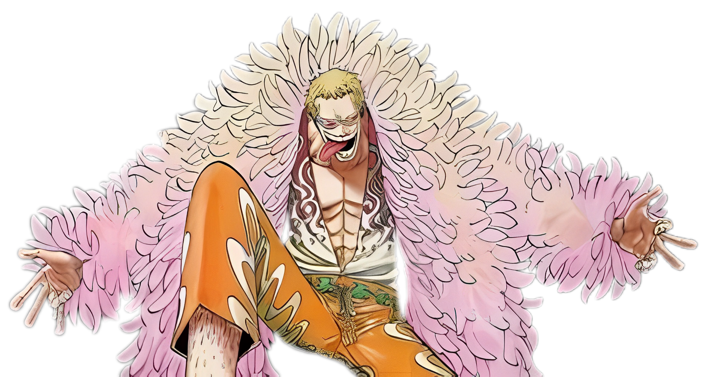
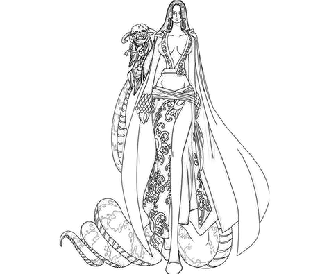
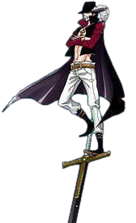
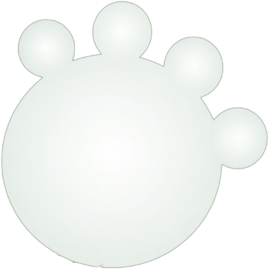

Aqui está todos os piratas conhecidos por terem feito parte de Shichibukai de One Piece em um momento ou outro. Também conhecidos como os Sete Senhores da Guerra, os Shichibukai são um grupo de piratas poderosos escolhidos a dedo pelo Governo Mundial para se tornar legítimo. Em troca de operar livremente, os Shichibukai são obrigados a lutar em nome do governo quando chamados – geralmente para esmagar outros piratas fortes. Naturalmente, o sistema warlord é altamente controverso – o equivalente a One Piece de deixar criminosos cometerem crime, desde que peguem outros criminosos enquanto estão nisso. Independentemente disso, os Shichibukai fazem parte de um triângulo de poder ao lado do Governo Mundial e do Yonko, e esse equilíbrio supostamente traz paz aos mares.
Jinbe
Assim como Boa Hancock, Jinbe entrou no sistema warlord para o benefício de sua espécie. No mundo one piece, fishmen são regularmente subjugados e desprezados, e Jinbe procurou curar essa injustiça como parte da tripulação do Fisher Tiger’s Sun Pirates. Após a morte de Tiger, Jinbe assumiu a capitania e continuou a moral de seu mentor, tornando-se um pirata temível com uma recompensa de 250 milhões. Quando ele foi pessoalmente convidado para se juntar aos Shichibukai, Jinbe concordou, acreditando que ele poderia usar esse poder para melhorar as relações entre humanos e fishmen. Infelizmente, essa relação azedou quando o Governo Mundial pediu aos seus Shichibukai para irem à guerra contra o Barba Branca, e o Cavaleiro do Mar recusou firmemente. Sua decisão resultou na prisão e expulsão dos Sete Senhores da Guerra, mas Jinbe foi libertado por Luffy e, após uma longa amizade, o Fishman finalmente se juntou aos Chapéus de Palha como seu timoneiro oficial. Pular a bordo com Luffy rendeu a Jinbe uma recompensa aumentada de 430 milhões.
Crocodile
Crocodile já é um membro do Shichibukai quando One Piece começa, embora as informações sobre seus primeiros anos de pirataria sejam escassas. Depois de se juntar aos Senhores da Guerra, Crocodile estabeleceu-se na nação de Alabasta e fundou uma organização secreta chamada Obras Barrocas, com a intenção final de tomar o reino do deserto para si mesmo. Com os poderes de controle de areia do Fruto Do Diabo Suna-Suna, Crocodile criou uma seca em Alabasta e emoldurado Rei Cobra, a fim de desencadear uma rebelião. Crocodilo esperava entrar como herói de Alabasta, mas os Chapéus de Palha intervieram e o cabeça barroca honcho foi derrotado por Luffy. Todo o incidente de Alabasta foi testemunhado pelo Capitão Fumante da Marinha, e o status shichibukai de Crocodile foi, consequentemente, revogado. Ele foi preso até ser libertado por, ironicamente, Macaco D. Luffy. Embora sua antiga recompensa fosse de 81 milhões, Crocodilo é, sem dúvida, mais valor na linha do tempo atual, como ele continua a vagar pelos mares.
Doflamingo
O vilão final warlord Luffy enfrenta em One Piece, Donquixote Doflamingo despertado Devil Fruit dá-lhe um poder incrível, manipulando cordas afiadas de navalha em grandes distâncias. Operando como uma organização mafiosa, os piratas Donquixote são uma família unida que prioriza a lealdade mais do que o assassino médio marítimo. Donquixote usou sua herança como dragão celestial para chantagear seu caminho para os Sete Senhores da Guerra, e isso significava que ele poderia contrabandear frutas diabólicas sintetizadas para Kaido e tomar Dressrosa sem ser suspeitado. Só depois que Luffy derrotou Doflamingo e o almirante Fujitora descobriu que a verdade era que o reinado donquixote de terror pôs fim. Os privilégios de Doflamingo foram removidos, mas o incidente também resultou na proposta de Fujitora de acabar com os Shichibukai completamente. Antes de se juntar aos Senhores da Guerra, Doflamingo ganhou uma recompensa de 340 milhões.
Boa Hancock
A Imperatriz Boa Hancock sofreu uma educação difícil, escravizada por nobres ao lado de suas duas irmãs e forçada a comer o Mero-Mero (Amor-Amor) Fruto do Diabo, que lhe deu poder sobre corações impuros. Hancock e as irmãs Gorgon foram finalmente libertados por Fisher Tiger, e retornaram para sua ilha natal, Amazon Lily. Com sua força avassaladora e o haki conquistador, Hancock se tornou o capitão dos Piratas Kuja de sua ilha – uma tripulação só de mulheres composta pelos membros mais fortes da tribo amazonense Lily. Para garantir a segurança de seu povo, Hancock concordou em se tornar um Senhor da Guerra, apesar de odiar o governo por seu papel em sua escravidão, mas continuou a desafiar seus empregadores ajudando Monkey D. Luffy em qualquer oportunidade. Hancock permaneceu no emprego do Governo Mundial até que os Shichibukai foram dissolvidos. Semelhante ao Crocodilo, a recompensa pré-Warlord de Hancock foi de 80 milhões, mas a Imperatriz tornou-se exponencialmente mais forte desde então. Agora que a relação de Hancock com o Governo Mundial acabou oficialmente, ela provavelmente se juntará à frota de seu amado Luffy.
Mihalk
Um dos primeiros Shichibukai a aparecer em One Piece continua sendo um dos mais misteriosos. Aclamado como o melhor espadachim do mundo, os dias de pirataria de Mihawk são em grande parte incontáveis. Os fãs sabem apenas que o Governo Mundial ficou impressionado o suficiente com a habilidade de Dracule com uma lâmina para fazer uma oferta para o Shichibukai, e ele em grande parte desempenha essas funções sem reclamar, participando da Guerra da Cúpula, embora ele não necessariamente concordasse com o raciocínio. Apesar de sua lealdade externa ao Governo Mundial, Mihawk faz o que quiser, mantendo-se amigável com um Yonko (Red Hair Shanks) e treinando pessoalmente roronoa Zoro dos Chapéus de Palha. Com pouca equipe para falar, o próximo passo de Dracule Mihawk na carreira será fascinante.

Gecko Moriah
O principal vilão do arco Thriller Bark, Gecko Moria é outro pirata que se junta aos Shichibukai alguns anos antes da história de One Piececomeçar. Usando seu assustador fruto Kage-Kage, Moria rouba sombras e cadáveres para criar zumbis híbridos, e esses soldados mortos-vivos representam a maioria de sua tripulação. Excepcionalmente, o navio pirata Thriller Bark de Gecko Moria é uma ilha inteira, da qual ele operava como um Shichibukai. Apesar de perder para Monkey D. Luffy depois de tentar capturar a tripulação do Chapéu de Palha, Moria não foi imediatamente demitida como um Senhor da Guerra – em vez disso, uma operação clandestina foi posta em prática para que Moria fosse silenciosamente assassinada durante a Batalha de Marineford. Embora oficialmente morta, Moria escapou, e agora parece estar se associando com Barba Negra. Sua última recompensa conhecida foi de 320 milhões.
Bartholomew Kuma
Embora Bartholomew Kuma tenha se juntado aos Shichibukai, sua verdadeira afiliação estava com o Exército Revolucionário e o pai de Luffy, Dragão. Durante seu tempo com o Governo Mundial, ele poderia ter alimentado informações de volta para os revolucionários, mas em algum momento, esse segredo foi descoberto. Kuma foi transformado em um ciborgue pelo enigmático Dr. Vegapunk do governo, e essas plantas foram mais tarde usadas para criar um exército de Pacifistas, que agora servem como a principal força dos fuzileiros em vez dos Shichibukai. O verdadeiro Kuma, entretanto, é reduzido a um escravo dos Dragões Celestiais. Kuma ajudou muito a causa de Luffy enviando cada membro da tripulação em uma missão de treinamento de dois anos com sua fruta Paw-Paw, e ele até protegeu os Mil Sunny enquanto a tripulação estava fora. Os detalhes completos da história de Kuma provavelmente serão revelados quando One Piece alcançar Jewely Bonney na Terra Santa.
